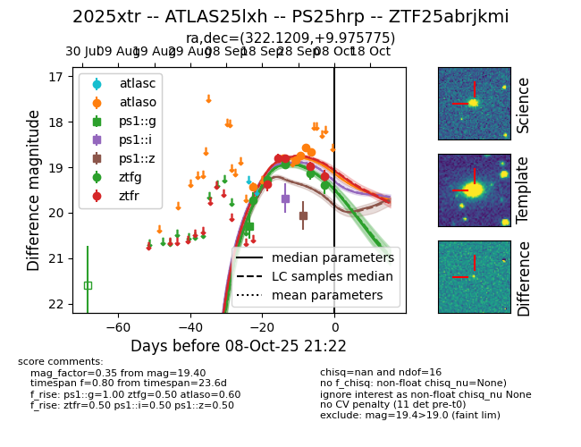
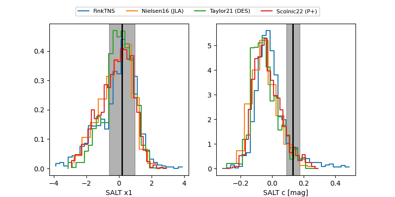

FINK: ZTF25abrjkmi
Lasair: ZTF25abrjkmi
ALeRCE: ZTF25abrjkmi
TNS: 2025xtr
YSE: 2025xtr
ZTF25abrjkmi (ztf,fink)
2025xtr (yse,tns)
ATLAS25lxh (atlas)
PS25hrp (panstarrs)
equatorial (ra, dec) = (322.1209,+9.97578)
galactic (l, b) = (62.8259,-28.40695)


last atlaso=18.66, ps1::g=18.84, ps1::i=19.68, ps1::z=20.06, ztfg=19.40, ztfr=19.20
6 atlaso, 2 ps1::g, 1 ps1::i, 1 ps1::z, 5 ztfg, 5 ztfr detections